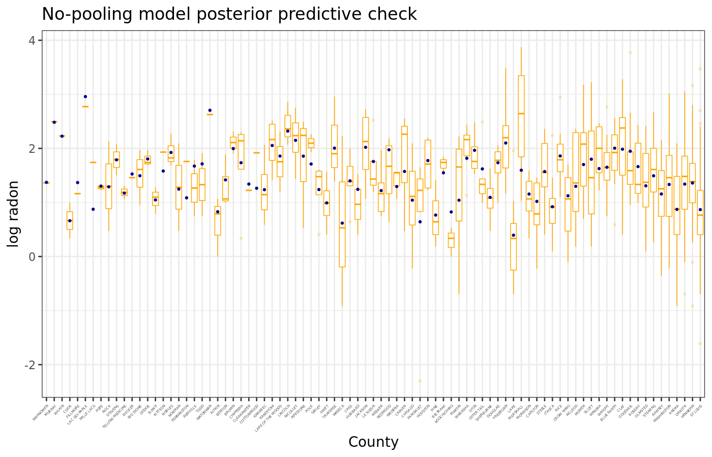
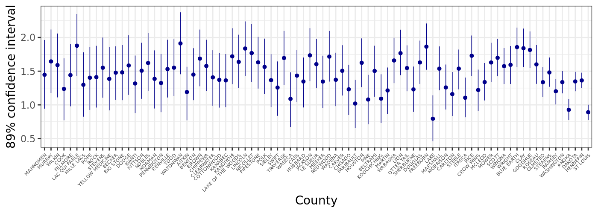
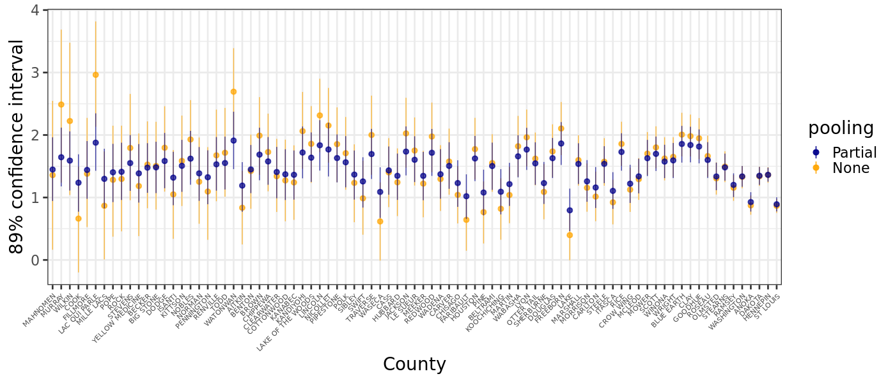
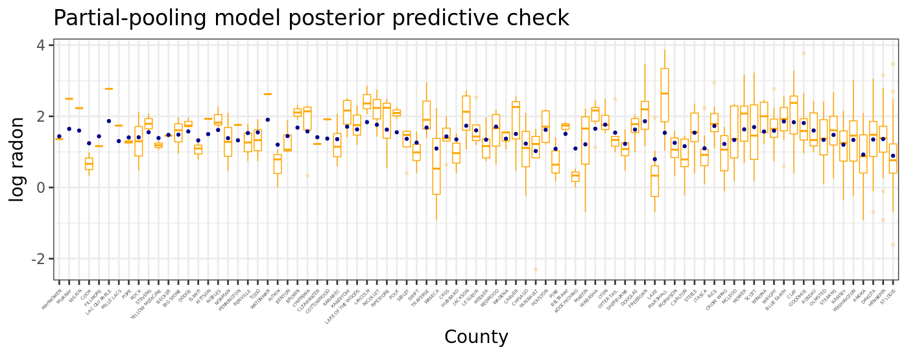

Multilevel Models, Part 1
EES 5891-03
Bayesian Statistical Methods
Jonathan Gilligan
Class #18: Tuesday, November 01 2022
Multilevel Models
A Tale of Two Cafés
- Two cafés:
- Estimate time to get a coffee
- Prior: Normal(5, 1) (times in minutes)
- Randomly visit each café
Order coffee: waiting time t
-
Update estimate:
\[ \text{Posterior}(\mu | t) = \frac{\text{Likelihood}(t | \mu) \text{Prior}(\mu) }{\int_0^\infty \text{Likelihood}(t | \mu) \text{Prior}(\mu) d\mu} \]
- Great, if the two cafes are the same, but what if they’re very
different?
- Our procedure forgets which café we ordered from.
- Multilevel models remember the different cafes
- Posterior for generic café (uses all data)
- Posterior for each individual café (remembers which data came from that cafe)
- If we visit some cafés more than others, data from highly-visited cafés helps refine estimates for seldom-visited cafés.
Multilevel Models
- Multiple clusters of data
- Model pools information across clusters
- Repeat sampling improves estimates
- Each new measurement in any cluster improves posterior estimates in all clusters.
- Improved estimates for imbalanced sampling
- Clusters with few samples borrow strength by pooling with highly-sampled clusters.
- Estimates of variation between clusters
- Avoid averaging, retain variation
- Averaging all clusters together underestimates variation &
uncertainty.
- Danger of overconfidence
- Multilevel models let us look at the averages and variation.
- Key concept: partial pooling.
- Averaging all clusters together underestimates variation &
uncertainty.
Disadvantages of Multilevel Models
- More assumptions about the system we’re studying
- Distributions of characteristics of the different clusters.
- Maximum entropy methods help choose likelihood distributions.
- Distributions of characteristics of the different clusters.
- Computational/mathematical challenges in calculating estimates
of posterior
- MCMC methods work well
- Hard to understand and interpret
- Model has many levels
- We may oonly be interested in one or a few
- DIC, WAIC, etc. are harder to interpret
- Hard to compare different models
- Model has many levels
Vocabulary
- Different names:
- multilevel models,
- hierarchical models,
- mixed-effects models
- All mean the same thing
- “mixed effects” (my definition):
- Mixes fixed effects and random effects
- A fixed effect describes the effect a categorical variabe,
where you sample all possibilities (e.g., different states, or different
counties within a state)
- Typically, we have several measurements for each level of the fixed effect.
- A random effect is a variable that is not sampled exhaustively (e.g., continuously distributed variables)
- A fixed effect describes the effect a categorical variabe,
where you sample all possibilities (e.g., different states, or different
counties within a state)
- But…
- There are many different definitions of fixed and random effects, and even expert statisticians can’t agree on a precise definition.
- Bottom line: Don’t sweat the definition.
- We don’t need precise definitions of fixed and random effects to work with multilevel or mixed-effects models.
- Mixes fixed effects and random effects
Case Study: Radon in Minnesota
Radon
Image from Minnesota Department of Public Health https://www.health.state.mn.us/communities/environment/air/radon/index.html
- Radon is a radioactive gas
- Produced by decay of uranium and thorium in soil
- Heavier than air (seeks low levels, like basements)
- Seeps into homes through gaps and pores in foundation
- Easily dispersed by improving ventillation in homes
Geographical Distribution of Radon

Problem
- In the late 1980s, the EPA conducted radon measurements throughout the nation (State Residential Radon Survey, SRRS)
- Sampling was not uniform:
- Some counties had many measurements, others might have only one or two.
- Radon concentrations measured in homes depend on the soil characteristics (amount of uranium) and characteristics of house construction.
- Regression model to predict radon risk from soil uranium
concentation
We need to account for variations in home construction
-
Assumption:
- Different counties have different housing characteristics
- Houses in the same county tend to be similar
-
Price, Nero, & Gelman (1996). “Bayesian prediction of mean indoor radon concentrations for Minnesota counties.” Health Physics 71:922. DOI: 10.1097/00004032-199612000-00009.
Multilevel model of indoor radon concentrations as a function of soil uranium concentration, accounting for variation in housing from county to county.
Radon Data
download.file(
"https://ees5891.jgilligan.org/files/data/radon/radon.Rdata",
mode = "wb"
)
load("radon.Rdata")## [1] 919 7## # A tibble: 6 × 7
## idnum state county fips floor activity county_id
## <int> <chr> <fct> <int> <int> <dbl> <int>
## 1 5081 MN AITKIN 27001 1 2.2 1
## 2 5082 MN AITKIN 27001 0 2.2 1
## 3 5083 MN AITKIN 27001 0 2.9 1
## 4 5084 MN AITKIN 27001 0 1 1
## 5 5085 MN ANOKA 27003 0 3.1 2
## 6 5086 MN ANOKA 27003 0 2.5 2- 919 homes were tested
-
fips: Federal Information Processing Standard code for state/county location -
floor: 0 = basement, 1 = ground-floor -
activity: Radon activity (picocuries per liter of air)
## [1] 85 5## # A tibble: 6 × 5
## fips Uppm county county_id homes
## <int> <dbl> <fct> <int> <int>
## 1 27001 0.502 AITKIN 1 4
## 2 27003 0.429 ANOKA 2 52
## 3 27005 0.893 BECKER 3 3
## 4 27007 0.552 BELTRAMI 4 7
## 5 27009 0.867 BENTON 5 4
## 6 27011 1.47 BIG STONE 6 3- There are 85 counties in the data set.
-
Uppm: Average soil uranium concentration (ppm) in the county -
homes: Number of homes tested in a county
Distribution of radon activity
Transform to log scales
## [1] 0.1 48.2mn_radon <- mn_radon %>%
mutate(log_radon = log(ifelse(activity > 0, activity, 0.1)))
mn_counties <- mn_counties %>%
mutate(log_uranium = log(ifelse(Uppm >= 0, Uppm, 0.1)))ggplot(mn_radon, aes(x = log_radon, colour = factor(floor),
fill = factor(floor))) +
geom_histogram(bins = 50, position = "stack", alpha = 0.5) +
labs(x = "log(Radon activity)")
Imbalanced Sampling
Imbalanced Sampling
Effects of Imabalanced Sampling
mn_radon <- mn_radon %>%
left_join(select(mn_counties, fips, homes, log_uranium), by = "fips") %>%
arrange(homes) %>%
mutate(county = ordered(county, levels = unique(county)))
mn_radon %>% filter(floor == 0) %>%
ggplot(aes(x = county, y = log_radon)) +
geom_boxplot(outlier.alpha = 0.4, varwidth = TRUE) +
labs(x = "County", y = "log radon", title = "Basement radon concentration") +
theme(axis.text.x = element_text(size = 8, angle = 45, hjust = 1, vjust = 1))## Soil Uranium Measurements {.eighty}
mn_counties %>% mutate(
label = ifelse(homes >= 25, as.character(county), NA)
) %>% ggplot(aes(x = homes, y = log_uranium)) +
geom_point(fill = alpha("orange", 0.3), color = "darkred", shape = 21) +
geom_text(aes(label = label), size = 5, nudge_y = 0.05, nudge_x = 4) +
labs(x = "Observations per county", y = "log soil uranium")Soil Uranium vs. Radon
Soil Uranium vs. Radon
mn_radon %>% arrange(desc(log_uranium)) %>%
mutate(county = ordered(county, levels = unique(county))) %>%
ggplot(aes(x = county, y = log_radon)) +
geom_boxplot(varwidth = TRUE, outlier.alpha = 0.4) +
labs(x = "County", y = "Log radon",
title = "Counties ordered by soil uranium high (left) to low (right)") +
theme(axis.text.x = element_text(angle = 45, hjust = 1, vjust = 1,
size = 5))Modeling Imbalanced Data
Pooling
- Many counties have only a few radon measurements:
- 3 counties have only 1
- 8 have only 2
- 11 have only 3
- Pooling
- Combine data from multiple counties to get more samples
- Complete pooling: Ignore counties and average all measurements together.
## # A tibble: 85 × 6
## fips Uppm county county_id homes log_uranium
## <int> <dbl> <ord> <int> <int> <dbl>
## 1 27087 1.16 MAHNOMEN 42 1 0.150
## 2 27101 1.49 MURRAY 50 1 0.399
## 3 27167 1.27 WILKIN 82 1 0.236
## 4 27031 0.604 COOK 16 2 -0.505
## 5 27045 1.51 FILLMORE 23 2 0.415
## 6 27073 1.36 LAC QUI PARLE 36 2 0.311
## 7 27095 0.811 MILLE LACS 47 2 -0.210
## 8 27121 1.32 POPE 60 2 0.281
## 9 27133 1.70 ROCK 65 2 0.528
## 10 27149 1.60 STEVENS 73 2 0.471
## 11 27173 1.43 YELLOW MEDICINE 85 2 0.355
## 12 27005 0.893 BECKER 3 3 -0.113
## 13 27011 1.47 BIG STONE 6 3 0.387
## 14 27039 1.30 DODGE 20 3 0.264
## 15 27059 0.471 ISANTI 29 3 -0.752
## 16 27069 0.992 KITTSON 34 3 -0.00780
## 17 27105 1.50 NOBLES 52 3 0.405
## 18 27107 1.30 NORMAN 53 3 0.265
## 19 27113 0.929 PENNINGTON 56 3 -0.0740
## 20 27129 1.46 RENVILLE 63 3 0.381
## 21 27153 0.954 TODD 75 3 -0.0468
## 22 27165 1.20 WATONWAN 81 3 0.183
## 23 27001 0.502 AITKIN 1 4 -0.689
## 24 27009 0.867 BENTON 5 4 -0.143
## 25 27015 1.32 BROWN 8 4 0.278
## # … with 60 more rowsDescriptive Statistics
Preliminary Data Analysis Findings
- 83% of the data are measurements taken on the basement level. The remaining 17% are on the ground floor.
- 70% of the counties (60 out of 85) have observations from both floors 0 and 1, the remaining 30% only have observations from floor 0 (basement).
- For most counties, there are fewer than 10 observations; 8 counties in metropolitan areas account for over half of the observations.
- The counties with the highest soil uranium levels do not have a lot of observations per county.
- Within each county, there is a wide range of radon measurements.
First models
- Start simple: \[
\begin{align}
R &\sim \text{Normal}(\mu, \sigma)\\
\mu &= \alpha + \beta F
\end{align}
\] where \(R\) is
log_radonand \(F\) isfloor.
-
Complete Pooling
Model results
-
Complete Pooling
## mean sd 5.5% 94.5% n_eff Rhat4 ## a 1.33 0.03 1.28 1.38 1658 1 ## b -0.62 0.07 -0.73 -0.51 1333 1 ## sigma 0.82 0.02 0.79 0.86 1752 1
-
No pooling
## mean sd 5.5% 94.5% n_eff Rhat4 ## a[1] 0.84 0.37 0.25 1.43 5490 1 ## a[2] 0.87 0.10 0.72 1.03 2821 1 ## a[3] 1.53 0.44 0.83 2.22 3897 1 ## a[4] 1.55 0.29 1.09 2.01 3263 1 ## a[5] 1.42 0.38 0.82 2.01 3915 1 ## a[6] 1.50 0.43 0.81 2.21 4191 1 ## a[7] 2.01 0.21 1.66 2.36 3851 1 ## a[8] 1.99 0.38 1.36 2.61 5451 1 ## a[9] 1.01 0.24 0.62 1.41 4232 1 ## a[10] 1.58 0.33 1.04 2.10 3771 1 ## a[11] 1.40 0.35 0.85 1.95 6015 1 ## a[12] 1.73 0.39 1.10 2.34 3279 1 ## a[13] 1.04 0.29 0.58 1.50 3814 1 ## a[14] 1.98 0.21 1.66 2.33 3642 1 ## a[15] 1.34 0.37 0.77 1.94 4177 1 ## a[16] 0.66 0.52 -0.20 1.50 3620 1 ## a[17] 1.27 0.41 0.62 1.93 3772 1 ## a[18] 1.13 0.22 0.77 1.47 3036 1 ## a[19] 1.34 0.09 1.19 1.49 3802 1 ## a[20] 1.80 0.43 1.09 2.46 4360 1 ## b -0.72 0.07 -0.84 -0.61 2071 1 ## sigma 0.76 0.02 0.73 0.79 3559 1
Model results
- Prepare data
cp_draws <- gather_draws(mdl_comp_pool, a)
cp_sum <- cp_draws %>% group_by(.variable) %>%
summarize(mean = mean(.value),
PI = list(set_names(PI(.value), c("lower", "upper"))),
.groups = ) %>%
unnest_wider(PI) %>%
mutate(pooling = "Complete")
cp_counties <- tibble(county = mn_counties$county,
mean = cp_sum$mean,
lower = cp_sum$lower,
upper = cp_sum$upper,
pooling = cp_sum$pooling)
np_draws <- gather_draws(mdl_no_pool, a[county_id]) %>%
left_join(select(mn_counties, county_id, county),
by = "county_id")
np_sum <- np_draws %>% group_by(.variable, county_id, county) %>%
summarize(mean = mean(.value),
PI = list(set_names(PI(.value), c("lower", "upper"))),
.groups = "drop") %>%
unnest_wider(PI) %>%
mutate(pooling = "None")ggplot(np_sum, aes(x = county, y = mean, ymin = lower,
ymax = upper, color = pooling,
fill = pooling)) +
geom_pointrange(size = 0.3) +
geom_line(data = cp_counties, aes(x = as.numeric(county)),
size = 1) +
geom_ribbon(data = cp_counties, aes(x = as.numeric(county)),
alpha = 0.2, color = NA) +
scale_color_manual(values = c(Complete = "orange",
None = "darkblue")) +
scale_fill_manual(values = c(Complete = "orange",
None = "darkblue")) +
theme(axis.text.x = element_text(angle = 45,
hjust = 1, vjust = 1, size = 5))Plot model results
Posterior Predictive Check
mn_basement_radon <- mn_radon %>% filter(floor == 0)
np_median <- np_draws %>% filter(.variable == "a") %>%
group_by(county) %>% summarise(log_radon = median(.value))np_draws %>% filter(.variable == "a") %>%
ggplot(aes(x = county, y = log_radon)) +
geom_boxplot(data = mn_basement_radon, color = "orange", outlier.alpha = 0.2) +
geom_point(data = np_median, color = "darkblue") +
labs(x = "County", y = "log radon", title = "No-pooling model posterior predictive check") +
theme(axis.text.x = element_text(angle = 45, hjust = 1, vjust = 1, size = 5))Posterior Predictive Check

Multilevel Modeling
A Multilevel Model
- Partial Pooling \[ \begin{align} U &\sim \text{Normal}(\mu, \sigma) \\ \mu &= \alpha_{\text{county}} + \beta F \\ \alpha_{\text{county}} &\sim \text{Normal}(\bar\alpha, \sigma_\alpha) \end{align} \]
- Two levels
- \(U \sim \text{Normal}(\mu, \sigma)\)
-
\(\alpha_{\text{county}} \sim
\text{Normal}(\bar\alpha, \sigma_\alpha)\)
- Instead of a prior for \(\alpha\), we have a _likelihood, with hyperpriors for \(\bar\alpha\) and \(\sigma_\alpha\).
- \(\bar\alpha\) reflects the completely pooled analysis
- \(\sigma_\alpha\) allows variation similar to the non-pooled analysis
- The model allows \(\sigma_\alpha\) to adjust to create the best balance between the completely pooled and the non-pooled models.
- This is a partially pooled model.
ml_data <- select(mn_radon, county_id, log_radon, floor)
mdl_ml <- ulam(
alist(
log_radon ~ dnorm(mu, sigma),
mu <- a[county_id] + b * floor,
a[county_id] ~ dnorm(a_bar, sig_a),
b ~ dnorm(0, 10),
sigma ~ dexp(1),
a_bar ~ dnorm(0, 10),
sig_a ~ dexp(1)
), data = ml_data, chains = 4, cores = 4, log_lik = TRUE)precis(mdl_ml, digits = 2, depth = 2,
pars = c("a_bar", "sig_a", "b", "sigma", paste0("a[", 1:5, "]")))## mean sd 5.5% 94.5% n_eff Rhat4
## a_bar 1.46 0.05 1.38 1.54 1027 1
## sig_a 0.33 0.05 0.26 0.41 542 1
## b -0.69 0.07 -0.81 -0.59 1471 1
## sigma 0.76 0.02 0.73 0.79 2422 1
## a[1] 1.19 0.25 0.77 1.57 2919 1
## a[2] 0.93 0.10 0.77 1.08 2277 1
## a[3] 1.48 0.25 1.07 1.87 2727 1
## a[4] 1.50 0.23 1.12 1.88 3140 1
## a[5] 1.45 0.25 1.07 1.84 2613 1Analyzing Multilevel Model
ml_draws <- gather_draws(mdl_ml, a[county_id]) %>%
left_join(select(mn_counties, county_id, county), by = "county_id") %>%
mutate(pooling = "Partial")
ml_sum <- ml_draws %>% group_by(county, county_id, pooling) %>%
summarize(mean = mean(.value), PI = list(set_names(PI(.value), c("lower", "upper")))) %>%
unnest_wider(PI)ggplot(ml_sum, aes(x = county, y = mean, ymin = lower, ymax = upper)) +
geom_pointrange(color = "darkblue") +
labs(x = "County", y = "89% confidence interval", title = ) +
theme(axis.text.x = element_text(size = 8, angle = 45, hjust = 1, vjust = 1))
Analyzing Multilevel Model
Comparing Models
ggplot(ml_sum, aes(x = county, y = mean, ymin = lower, ymax = upper, color = pooling)) +
geom_pointrange(data = np_sum, alpha = 0.7) +
geom_pointrange(alpha = 0.7) +
scale_color_manual(values = c(Partial = "darkblue", None = "orange")) +
labs(x = "County", y = "89% confidence interval", title = ) +
theme(axis.text.x = element_text(size = 8, angle = 45, hjust = 1, vjust = 1))
Posterior Predictive Check
ml_median <- ml_draws %>% filter(.variable == "a") %>%
group_by(county) %>% summarise(log_radon = median(.value))
ml_draws %>% filter(.variable == "a") %>%
ggplot(aes(x = county, y = log_radon)) +
geom_boxplot(data = mn_basement_radon, color = "orange", outlier.alpha = 0.2) +
geom_point(data = ml_median, color = "darkblue") +
labs(x = "County", y = "log radon", title = "Partial-pooling model posterior predictive check") +
theme(axis.text.x = element_text(angle = 45, hjust = 1, vjust = 1, size = 5))